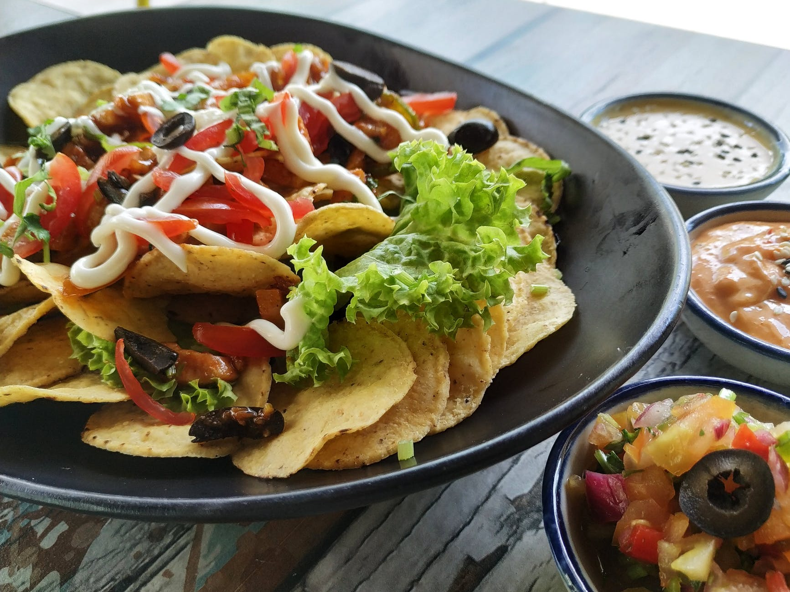
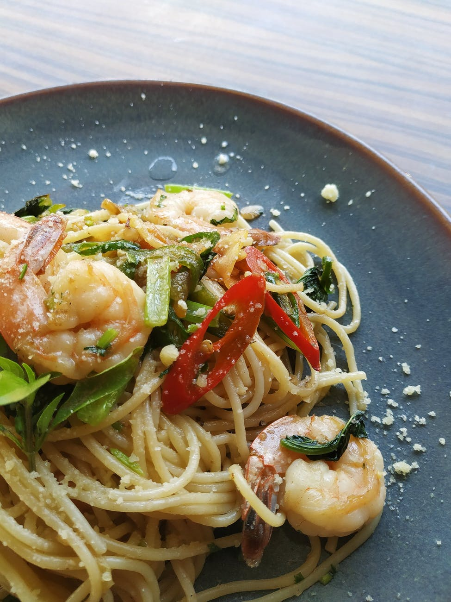
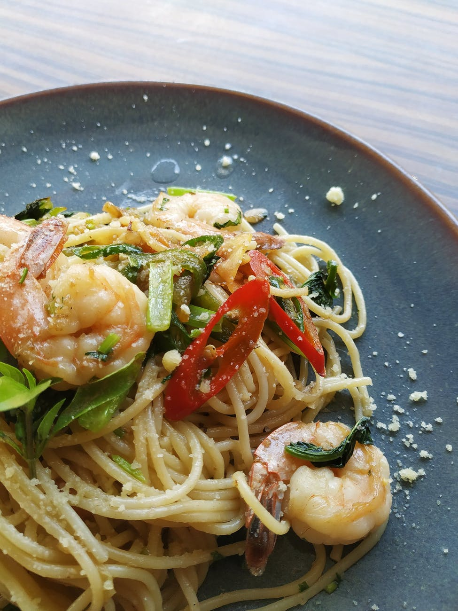
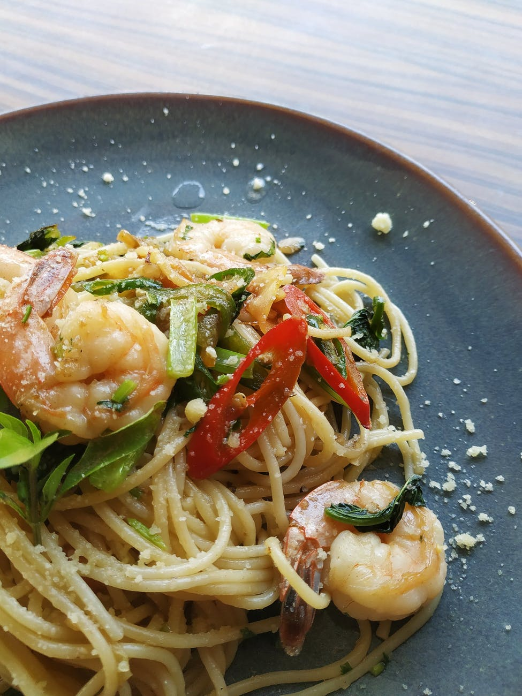
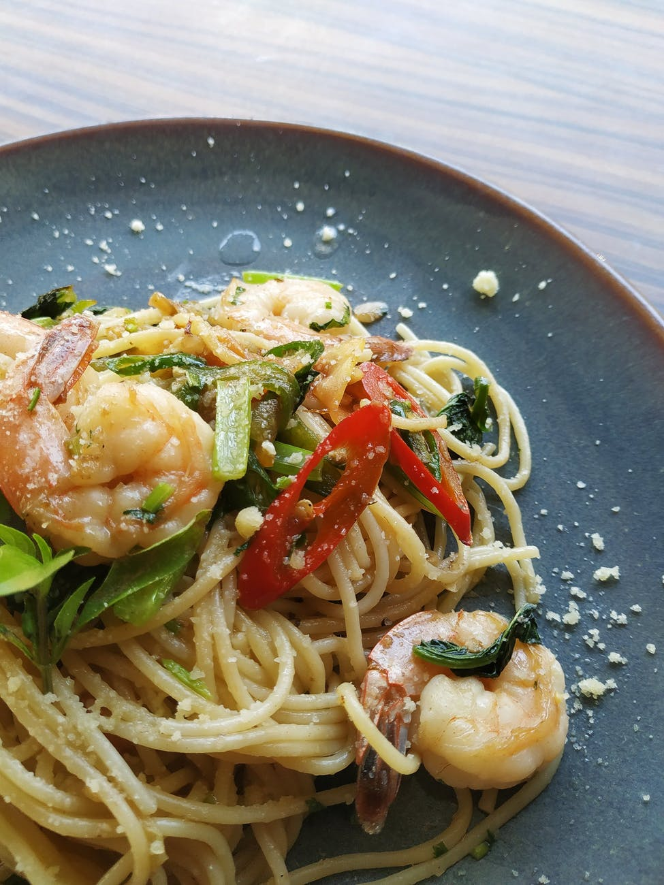

Gallery

 


Welcome to your private chef experience!
My name is Alberto and I have been a chef for many yers.
My passion started when I was a child and developed during the school
year.
I have studied in Italy and completed Catering college in 2009.
I have worked in various restaurants in Italy looking to improve my
skills and expand my knowledge as a chef.
I have worked in traditional Italian restaurants, Pastry shops, bakery
and some of them Michelin star.
In 2011 I have decided to move to London to learn the language and to
discover the varieties of cuisine that the Capital has to offer.
After a couple of year I became Head Chef for a very well kwon Gastro
Pub in West London and I stayed there for a few years.
I than moved onto events catering, both private and corporate. This gave
me the opportunity to work for one of the leading company in UK.
All of those changes brought me to learn a lot of new skill, techniques
and cuisine which I intend to use to create an exciting and pleasant
experience for your family and friends.

A Caesar salad (also spelled Cesar and Cesare) is a green salad of romaine lettuce and croutons dressed with lemon juice (or lime juice), olive oil, egg, Worcestershire sauce, anchovies, garlic, Dijon mustard, Parmesan cheese, and black pepper. In its original form, this salad was prepared and served tableside.
Hongshao rou is a classic pork dish from mainland China, cooked using pork belly and a combination of ginger, garlic, aromatic spices, chilli peppers, sugar, light and dark soy, and rice wine.
The most common dashi soup stocks for miso soup are made of niboshi (dried baby sardines), kombu (dried kelp), katsuobushi (thin shavings of dried and smoked bonito, aka skipjack tuna), or hoshi-shiitake (dried shiitake).